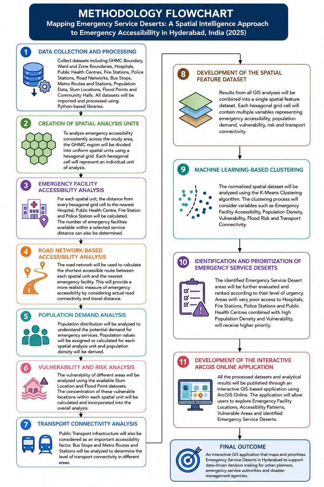

Map Legend
Classes And Symbols Match The SLD Styles Published On GeoServer.
Methodology
Ward Values Are Aggregated From The 1 Km Hexagon Analysis Grid Using An Area- And Population-Weighted Overlay.

About This Dashboard
Analysis
Emergency Accessibility Was Analysed On A 1 Km Hexagon Grid (Distance To Hospitals, Fire Stations, Police Stations And PHCs, Population, Slums, Flood Points And Transit), Clustered With K-Means To Identify Service Deserts.
Ward Aggregation
Hexagon Values Were Aggregated To The 155 GHMC Wards Using An Area- And Population-Weighted Overlay, Giving Each Ward Its Share Of Area And Population In Service Deserts.
Web GIS
The Layers Were Published On GeoServer (WMS, WFS, SLD Styles) And Built Into An OpenLayers Dashboard. This Public Version Is A Static Snapshot Of That Data, So It Works Without A Running Server.
Data In This Dashboard
| Layer | Features | Source |
|---|---|---|
| GHMC Wards (Hexagon-Derived Indicators) | 155 | Ward Boundaries, WorldPop 2025, Project Analysis |
| Hospitals / PHCs | 890 / 343 | Project Dataset |
| Fire Stations / Police Stations | 21 / 167 | Project Dataset |
| Bus Stops / Metro Stations / Railway Stations | 1,820 / 53 / 42 | Bus And Metro GTFS Feeds, OpenStreetMap |
| Slums / Flood Points | 1,342 / 23 | Project Dataset |
- Loading From WFS…